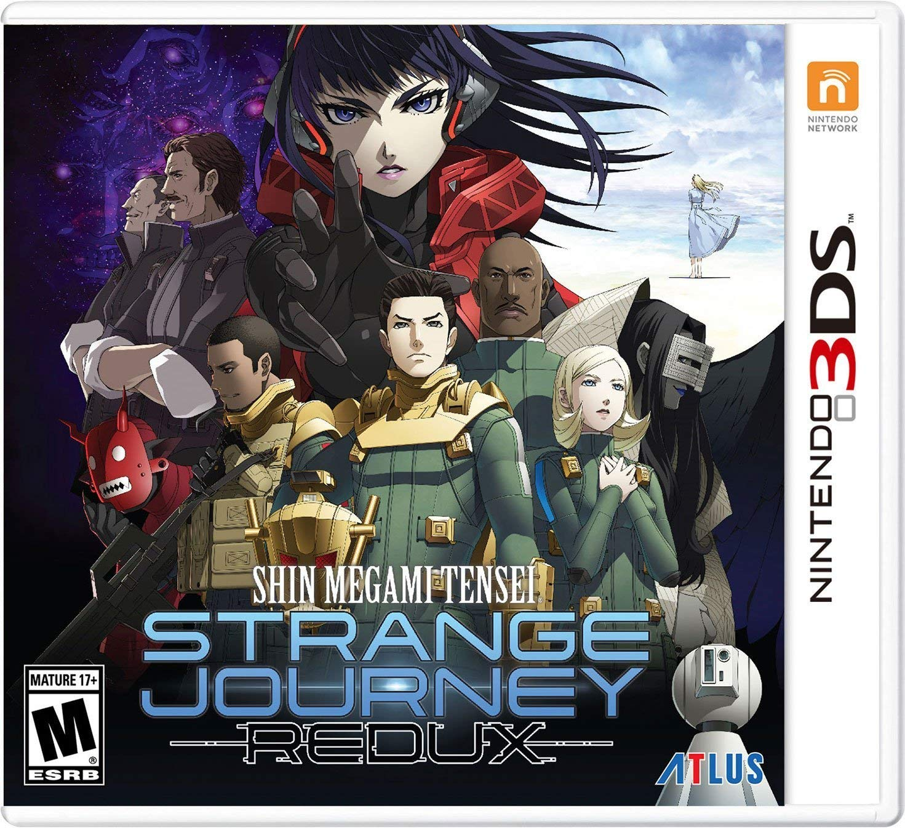
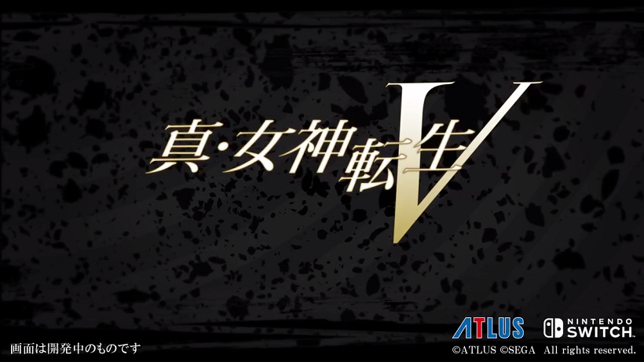

SMT: GATEAWAY GAME

Shin Megami Tensei 1 (1995): Besides the obvious fact that you can't play the PS1 version
'cause the game is in japanese and it is crazy expensive on Ebay. You can emulate the game through SNES9x
and try to find a compatible controller. The game mechanic are super outdated and it is heavily difficult to find even
the most basic commands like map or retreat. You're gonna be more paranoid over random encounter rather than
the actual boss fights 'cause encounter rate is crazily high!! Still a good game though. 1/5

Shin Megami Tensei 2 (1996): A direct sequel to 1 and takes place in the future. Has the same low accessbility Like SMT 1 but with better gameplay.
This is suitable for those who want to enjoy old-school Atlus at their best. The plot is somewhat connected to 1 so you're expected to know some of
the references. The story is very intriguing and can still be enjoy without having to play the first one. 2/5

Shin Megami Tensei if... (1997): A spin-off covering a what-if scenario
when the event of the first game did not happen. Considered to be Persona 0 due to its element being implement in Perosna later on (and Katsura Hashino's
heavy involvement). The gameplay is the same as 2 but a bit more smooth. The main problem with if.. is its little to no story, its lacking of character focus and
not having a fan-translation up until 2019. 2/5

Shin Megami Tensei 3 Nocturne (2003): Easily the most recommended game for people who want to
know SMT' true essence. Has way better graphics than the last three and way smoother gameplay with a third-person camera instead of first-person. The story is rather
minimalistic but very interesting with some of the most iconic characters. The only downside is its difficulty which could be a turn off.
An overall great game that still stands the test of time. 4/5

Shin Megami Tensei 4 (2013): The best game for beginners to both the franchise and JRPG in general.
Has a more complicated story than Nocturne and better gameplay. It is basically Nocturne but easier and more concrete storyline. 5/5

Shin Megami Tensei 4 Apocolypse (2016): A spin-off from 4 that branches onto another storyline within 4.
Has the best gameplay in SMT so far. However suffers from underwhelming plot and character (fans blaming th developers trying to cater to Persona fans by making the game more light-hearted)
A great game for people who have played Persona trying to slowly shift to SMT, however keep in mind that the game gives inaccurate representation of the actual SMT content. 5/5

Shin Megami Tensei Stange Journey (2012) and Redux (2016): Great games for those new to the series as the games have classic
SMT element while still incoporating its own unique elements. The difficulty is not too high and con solved by grinding for a bit. Great charcter and story, howwever has questionable and inconsistent graphics. 5/5

Shin Megami Tensei V (TBA) : You can't play something that does not exist...yet (Honestly the entire fandom is experiencing maybe
the worst drought yet. GIVE US THE GAME ALREADY ATLUS!!!!)